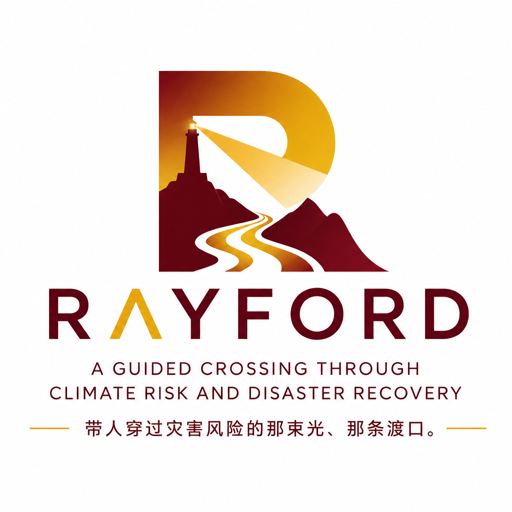
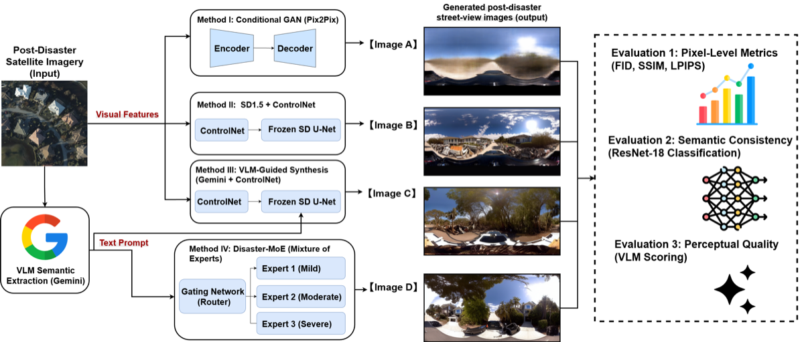
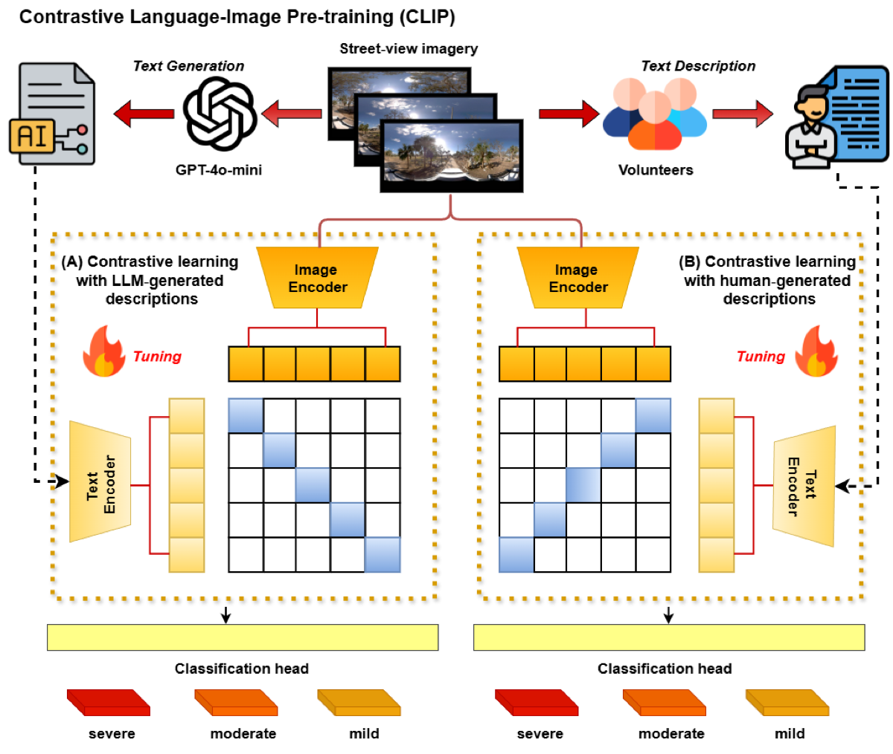
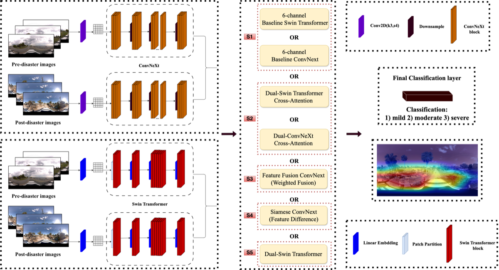
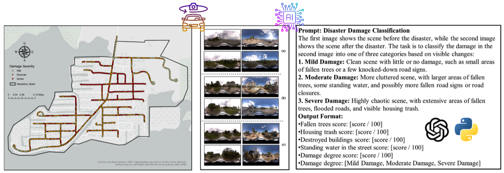
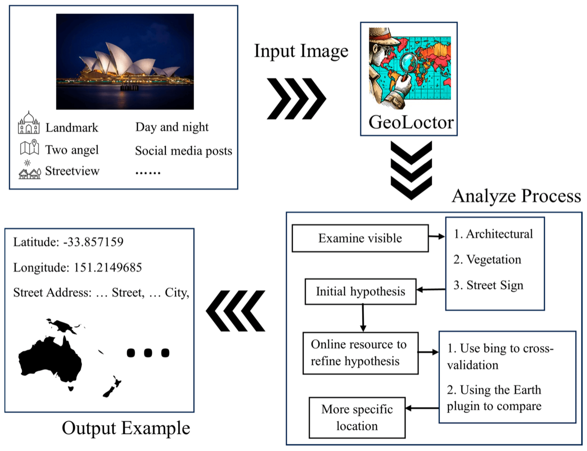
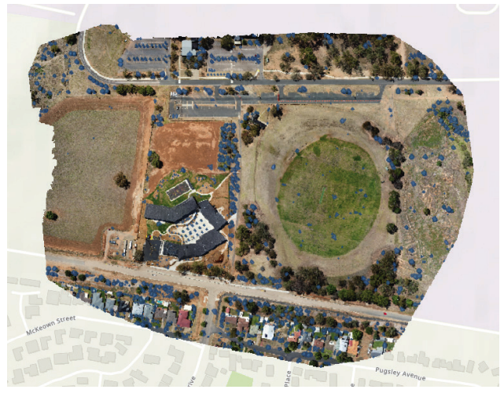

Property-level damage evidence
Compare pre-event and post-event imagery, score visible damage, attach evidence, and show confidence at the parcel level for auditable assessment workflows.

Ray turns remote sensing, street-level imagery, and geospatial context into auditable intelligence for disaster, infrastructure, and property decisions.
U.S. billion-dollar climate disasters in 2024
Estimated U.S. damage from 2024 disasters
Global insured catastrophe losses, 2024
Published GeoAI research behind Ray's engine
Ray is the intelligence system for real-world perception, evidence, and action — starting with the most urgent workflow in property decisions: what changed after a disaster, and what it means.
Compare pre-event and post-event imagery, score visible damage, attach evidence, and show confidence at the parcel level for auditable assessment workflows.
Rank properties for adjuster review and package imagery, metadata, and explanations for faster, more defensible insurance claim workflows.
Connect damage evidence with hazard context, mitigation priorities, and resilience planning for properties and critical infrastructure.
Parcel records, hazard context, built-environment data, and pre-event imagery assembled for the target area.
Street-view, satellite, drone, and field imagery across time — fused and aligned at the property level.
Damage scoring, multimodal reasoning, and confidence estimates via Ray's CLIP-enhanced arbitration layer.
Action-ready evidence packages with scores, confidence, and imagery for downstream human review.
Rayford AI focuses on post-event decisions: what changed, how severe it is, what evidence supports the score, and what a human reviewer should inspect next.
Imagery-only tools show pixels. Ray Assess compares ground and overhead evidence at the property level — a dual-sensor approach no pure satellite vendor offers.
Pre-event underwriting tools forecast risk. Ray packages post-event damage evidence for recovery decisions — different workflow, different timing, different customer.
Model arbitration, confidence, and paper-backed methods make output easier for public teams to review, defend, and submit to FEMA or insurers.
Rayford AI translates peer-reviewed GeoAI research into a practical intelligence layer for physical-world perception, evidence, and action.






We are opening a small number of early pilots for historical-event validation and review-ready property assessment workflows.
Discuss a pilot →Prioritize preliminary damage assessment when a disaster creates more properties than field teams can inspect. Ray Assess provides ranked, evidence-backed triage.
Convert street-level and aerial data into auditable property and asset layers for assessment, resilience planning, and operational review after major events.
Use the same evidence package for claims triage once the public-sector workflow is validated — shared evidence, faster review, defensible output.
U.S. billion-dollar weather and climate disasters in 2024 — the physical world is changing faster than assessment infrastructure can keep pace.
NOAA ↗Estimated U.S. damage from 2024 billion-dollar disasters — a market where faster evidence means faster recovery and lower total cost.
NOAA ↗Global insured natural catastrophe losses reported for 2024 — growing year over year with no slowdown in underlying physical risk.
Swiss Re ↗Technical lead for Ray, focused on multimodal spatial intelligence, street-view analysis, model arbitration, and autonomous GeoAI systems.
LinkedIn ↗Advisor for the GeoAI and spatial-intelligence foundation behind Rayford AI's research-to-venture path and disaster resilience direction.
LinkedIn ↗Committee advisor for computer vision, multimodal model design, and validation strategy for Ray's geospatial physical AI engine.
LinkedIn ↗Committee advisor for built environment context, infrastructure intelligence, and product-risk review for real-world decision workflows.
LinkedIn ↗Complete 40 customer discovery interviews across emergency management, GIS, insurers, adjusters, resilience teams, and recovery consultants.
Build a working Ray Assess demo for property-level and evidence-driven triage on a historical event.
Create two validation case studies showing before-and-after imagery, evidence, confidence, and workflow relevance.
Secure 3 pilot or letter-of-intent conversations with serious target customers by Demo Day, August 7, 2026.
We are scheduling customer discovery and pilot conversations with emergency management, GIS, insurance, resilience, and infrastructure teams.